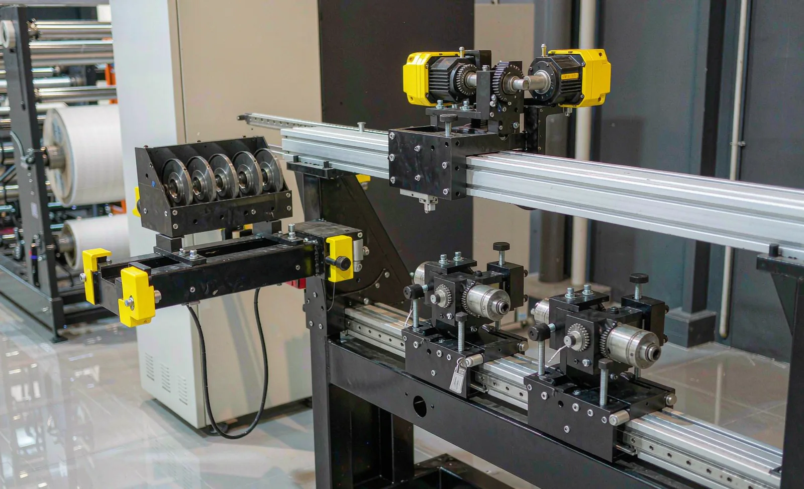
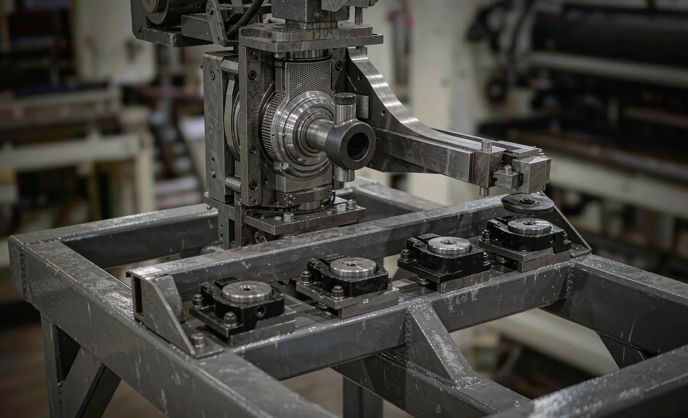

Published September 17, 2026 | By HDPTH Technical Editorial Team

On a busy slitter rewinder, rated speed matters less than the time spent not running at it. Knife setup — repositioning holders, setting overlap and clearance, verifying first cuts — is routinely the largest block of changeover time and the one most sensitive to operator skill and shift. Automatic positioning and blade changing attack that block directly. This guide covers the automation levels, payback logic, specification points and FAT verification.
Three levels of knife automation
Buyers encounter three distinct levels, and quotations do not always make them clear:
- Manual setup: operators measure and slide holders along the shaft — flexible, cheap, slow, and quality depends on who is on shift.
- Automatic knife positioning: motorized holders travel to recipe-defined positions under HMI control; overlap and clearance may be manual or automatic by holder design. The workhorse level for plants with changing order books — see automatic knife positioning.
- Automatic blade changing: a carriage, gripper or magazine exchanges blade holders or retracts blades mechanically, removing hands-on blade work at the rail — justified by very frequent grade changes or high slit counts.
Whatever the level, the slitting method must still match the material — razor, shear or score — as covered in our slitting methods comparison. Automation moves the knives; it does not choose the cutting physics.
The payback calculation buyers should actually run
The decision is arithmetic. Count changeovers per shift from real data; time knife setup honestly, including first-cut verification; multiply by operators. Manual setup commonly consumes 20 to 60 minutes per changeover as slit counts rise; automatic positioning reduces the machine-held portion to minutes. A plant changing products several times per shift with twenty slits across the web recovers positioning in months; a plant running the same two products for months may never recover the premium — and should spend the money on capacity.
Specifying the system: what separates offers
Two quotations both reading “automatic knife positioning” can differ substantially. Push on these points:
| Specification point | What to require |
|---|---|
| Positioning accuracy | Stated repeatability plus a FAT test: same recipe three times, slit widths measured on samples, no manual touch-up |
| Recipe integration | Widths, blade type, overlap and clearance per recipe; new recipes creatable at the HMI |
| Blade management | Blade type per material, expected life in linear meters, wrong-type detection at setup, handling provisions |
| Change times | Committed minutes for a full reposition at your slit count — not a best case at three knives |
| Safety | Guarded rail access, interlocked gates stopping the carriage, risk assessment covering remaining manual blade tasks |
The recipe point deserves emphasis: positioning hardware delivers value only through the recipe management layer around it. If operators must re-enter widths or re-tune settings per job, part of the automation is wasted.
Safety: automation changes the risk, it does not delete it
Automating blade work removes much hands-on exposure to sharp edges — historically among the higher-risk tasks on converting lines — but adds moving powered machinery at the knife rail. Require guarding and interlocks around the carriage, and ask how residual manual tasks (blade storage, cartridge exchange, disposal) are designed for. Maintenance follows lockout practice where stored energy is involved; the sources section lists the regulatory references.
Verifying at FAT and after handover
The acceptance sequence that works: run your most complex real recipe three times from HMI recall; measure and record first-article slit widths; confirm the committed reposition time at that slit count; then change one width at the HMI and repeat, proving engineers are not needed for routine changes. After handover, track setup time per changeover and compare it with the FAT baseline — drift there is usually a training or maintenance signal, not a hardware one, as discussed in our OEE and downtime data guide.

Evaluating automatic knife systems?
Send HDPTH your product mix, slit counts and changeover frequency. We will recommend the appropriate automation level — positioning, blade handling or both — with committed change times and a FAT test plan, included in the offer.
Submit Your Project InquiryQuestions to put to every vendor
- Does the quotation include automatic positioning only, or blade changing as well — and what exactly does each include?
- What positioning repeatability do you commit to, proven by what test at FAT?
- How many minutes does a full reposition take at my slit count, on my materials?
- Which blade types and edge preparations do you recommend per material, with what expected life?
- What guarding, interlocks and risk assessments cover the moving carriage and remaining manual blade tasks?
- Which knife-system parts are wear items, and what does the two-year spares kit cost and weigh?
Planning a complete machine offer?
Read our guides on the FAT checklist and knife holder mounting to connect the knife system with acceptance and maintenance planning.
Contact HDPTHFrequently asked questions
When does automatic blade changing pay for itself?
Estimate it from your order structure. Count changeovers per shift, measure the current knife setup time honestly — positioning blades, setting overlap and clearance, checking first cuts — and multiply by the number of operators involved. Manual knife setup commonly consumes 20 to 60 minutes per changeover depending on the slit count; automatic positioning reduces the machine-held portion to minutes. High product variety, many slits per web and multi-shift running push the payback toward months; a plant running one or two products for months at a time may never recover the premium. The arithmetic, not the feature list, makes the decision.
What is the difference between automatic knife positioning and automatic blade changing?
They are separate levels of automation on the same axis. Automatic positioning moves motorized knife holders along the rail to the recipe widths under HMI control — the operator no longer measures and slides holders by hand, but the same blades stay mounted. Automatic blade changing goes further: a mechanism — carriage, gripper or magazine — swaps or retracts blade holders so that dull or wrong-type blades are exchanged without manual work at the rail. Many mid-range machines offer positioning only; full blade changing is typically justified by very frequent grade changes or high slat counts. Specify which level each quotation actually includes, because the price difference is large.
What positioning accuracy should buyers expect and how is it proven?
Well-built motorized knife positioning holds repeatable set positions within roughly ±0.1 to ±0.5 mm depending on the drive and mechanical design — but the contractual number is only meaningful with a test method attached. Require that at FAT the supplier runs the same recipe three times, measures the resulting slit widths on produced samples, and demonstrates that the positions repeat within the stated tolerance without manual touch-up. First-article slit width on real material is the proof buyers can audit; a position readout on the HMI alone is not.
How does automatic knife changing interact with safety requirements?
It removes a large share of hands-on exposure to blades — historically one of the higher-risk tasks on a converting line — but adds moving machinery at the knife rail. Specify guarded access to the rail, interlocked gates that stop the positioning drives when opened, and maintenance procedures for blade exchange that follow lockout practice where stored energy is involved. Ask the supplier for the risk assessment covering the knife system: which manual tasks remain, what guarding surrounds the moving carriage, and how blade handling outside the machine (storage, transport, disposal) is supported by the design.
Which blade-related questions belong in the spare parts agreement?
Blade type and edge preparation for each material family, expected blade life in linear meters, the holder and cartridge parts treated as wear items, the cost and lead time of the recommended two-year spares kit, and whether blade sharpening is done in-house or by exchange. Also confirm that HMI recipes store blade-type selection and that the automatic system rejects or flags wrong blade types at setup — a mis-specified razor in a shear application ruins both the cut and the blade.
Sources
- OSHA: Machine guarding resources — moving machinery and point-of-operation hazards
- OSHA: Control of hazardous energy (lockout/tagout) — blade exchange and maintenance
- ANSI B11 committee: machinery safety requirements, including risk assessment for automated functions
- UK HSE: Work equipment and machinery guidance — safe use and guarding